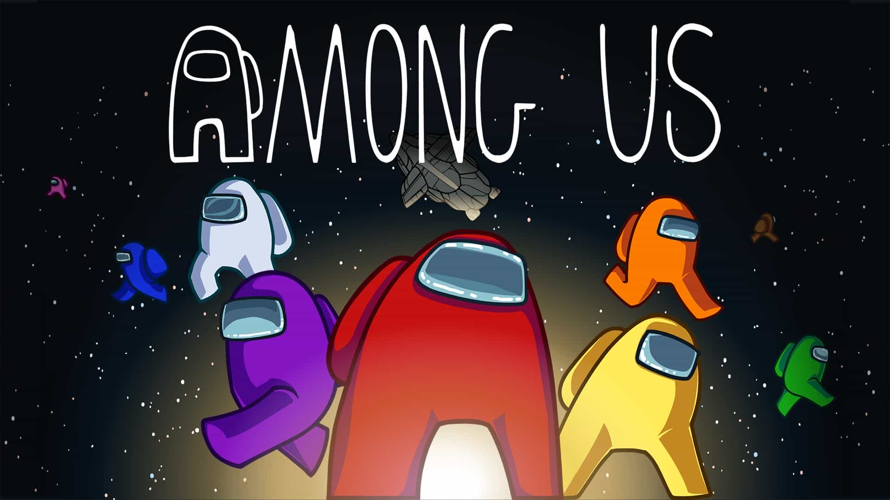

Početna
Općenito
O igrici
Among Us je multiplayer detektivska igra koju je razvio i objavio američki studio InnerSloth 15. lipnja 2018. godine. Igra se odvija na jednoj od tri lokacije u svemiru i igrači mogu biti u jednoj od dviju uloga: članovi posade ili uljezi, s tim da su većina članovi posade, a jedan do tri igrača uljezi, ovisno o postavkama partije. Dužnosti članova posade jesu da otkriju tko su uljezi, riješe ih se i završe zadatke koji su im dodijeljeni, dok je cilj uljeza da neprimjetno ubiju članove posade.
Pravila igre
U igri Among Us, najmanje četiri osobe, a najviše njih deset, sudjeluju na jednoj od tri karte: svemirskom brodu (The Skeld), sjedištu kompanije Mira (Mira HQ) i planetarnoj bazi (Polus). Radnja se odvija u mini igrama koje članovi posade obavljaju dok se uljezi pokušavaju sakriti i sabotirati sustave. Cilj članova posade je završiti sve zadatke prije nego što ih uljezi ubiju ili ih pronaći i riješiti se uljeza. Kad igrač nađe leš, može ga prijaviti i svi se igrači okupljaju u grupnom sastanku kako bi pokušali otkriti tko je uljez. Igrači mogu sazvati izvanredni sastanak pritiskom dugmeta na karti kako bi razgovarali i glasovali tko će biti izbačen s karte. Igra nema ugrađenog sustava glasovnog razgovora, ali igrači često koriste druge programe s tom mogućnosti.
Recenzije
Možda je izvorno izašao 2018., ali Among Us je osvojio 2020. i zaslužuje to mjesto u centru pažnje. Innersloth je učinio da napeta zabava za više igrača u igrama s plaštem i bodežom kao što su Mafia i Werewolf rade na PC-u, mobilnim uređajima i konzolama s procvatom. A sjajni trenuci koje sam proveo ubijajući, lažući i tragajući na svom putu kroz šarmantni svijet znanstvene fantastike naveli su me da se zapitam zašto je trebalo toliko dugo da se ova vrsta igre uhvati. Ima još nekoliko tehničkih zastoja koje treba riješiti, baš kao i nemirni motori na Skeldu, ali to me nije spriječilo da mu se uvijek iznova vraćam u vrijeme zastoja.